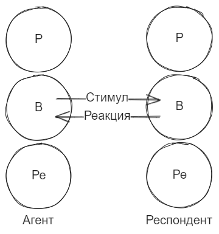

Игры в которые играют люди
Книга состоит из трех частей. В первой предлагается и теоретически описывается фреймворк трансакционного анализа в психологии. Во второй приводятся примеры результатов этого фреймворка с анализом конкретных “игр” и их практическими примерами. Третья кратко описывает область трансакционного анализа за пределами игр.
Мне первая часть очень понравилась, т.к. дала какой-то новый способ анализа коммуникации с людьми, что всегда занимательно. А вот вторая совсем не зашла, я не профессиональный психолог и не могу утверждать какие концепции наиболее справедливы/актуальны, но для моего восприятия как-то слишком психосексуально рассматриваются предлагаемые игры. Посему, фреймворк и занимательные следствия из него опишу подробно, а вот из самих игр только классификацию и редкие заметки.
Часть 1 – фреймворк и часть 3 – результаты.
Перед анализом игр, полезно узнать как описывается общение в рамках книги:
- Поглаживание – единица измерения социального действия
- Трансакция – обмен поглаживаниями
Вообще почему люди занимаются трансакциями? – Потому что им нужно упорядочить свое время в одной из трех программ времяпровождения:
Материальная программа – используется каждый раз, когда человек сталкивается с препятствиями и предназначена для обработки имеющейся информации.
Социальная программа – результат её действия – ритуальное общение, главная его характеристика – приемлемость на местном уровне.
Индивидуальная программа – включается, когда люди узнают другу друга получше и больше взаимодействуют.
Для характеристики времяпровождения выделяют 5 способов:Ритуалы
Развлчения
Игры
Близость
Деятельность, которая может быть основой для всего остального
Игра – последовательность действий, подчиненная индивидуальным программам. Тут важно помнить, что игра это лишь название, а не принижение серьезности этого явления.
Выигрыш в игре связан поддержанием физического и психического состояния, варианты вознаграждений в терминах психиатрии:
- Первичное внутреннее
- Первичное внешнее
- Вторичное
- Экзистенциальное
Теперь непосредственно фреймворк анализа:
Существует такое понятие как “состояние Я” – это связанная система образов поведения. Выделяют 3 набора таких состояний:
- Сходные с образами родителей (Я – родитель)
- Направленные на объективную оценку реальности (Я – взрослый)
- Архаичные образы из детства (Я – ребенок)
Далее утверждается, что в каждый момент времени любой человек проявляет одно из этих состояний. Каждое состояние имеет свою ценность:
- Ребенок – источник интуиции, творчества, спонтанных порывов и радости.
- Взрослый необходим для выживания, он обрабатывает данные и оценивает вероятности.
- Родитель позволяет взрослому вести себя как родитель по отношению к детям, а также делает многие автоматические реакции, чем бережет энергию.
- Теперь непосредственно к анализу. Трансакционный стимул – действие в рамках трансакции, трансакционная реакция – реакция на стимул.
Наконец, визуальное представление фреймворка для анализа: 
- Агент – обычно инициатор трансакции
- Респондент – другой участник
- Р, В, Ре – представления состояний человека, соответственно Родитель, Взрослый и Ребенок.
Собственно суть в том, что в трансакции происходит не просто от человека к человеку, а стимулирование реакции от конкретного я – состояния агента, к я-состоянию респондента.
Теоретически возможно видов 9 трансакций (все варианты соединения кружков прямой линией), они могут быть: - Дополняющими – между равными я-состояниями. (Р->Р, В->В, Ре->Ре) и другие не пересекающиеся (Р->В, Р->Ре, В->Ре)
- Пересекающиеся – все остальные
Также существуют и скрытые трансакции, где участвуют более двух я-состояний. Эта категория – основной предмет игр.
Полная классификация трансакций
По принципу состава участвующих я-состояний - Дополняющие
- Пересекающиеся
По количеству участвующих я-состояний:
* Простые – участвует 2 состояния (не обязательно разных)
* Скрытые – участвуют более 2 состояний, а именно:
+ Угловые – 3
+ Двойные – 4
Трансакции обычно осуществляются сериями. Ритуал это повторяющаяся серия простых дополняющих трансакций. Существуют и процедуры. Если ритуал это нечто устоявшееся, традиционное, то процедура – это рациональный, обоснованный потребностью, набор трансакций.
Люди хорошо чувствуют и рассчитывают ожидаемое количество поглаживаний для ритуала или игры. Так, например, если вы обычно раз в неделю видитесь с соседом и обмениваетесь парой фраз о погоде, то одинаково плохо будет и проигнорировать его в следующий раз, равно как и завалить подробностями о своей жизни.
Люди приспосабливаются к трансакциям так, чтобы каждый получал максимум выгоды. Особенно это характерно для развлечений. Развлечение это серия полуритуальных дополняющих трансакций с целью упорядочить время. Для разных социальных слоев характерен свой набор развлечений. Развлечения помогают человеку утвердиться в его роли и укрепить жизненную позицию.
Собственно игры. Игра – набор трансакций имеющий скрытые мотивы и выигрыш.
Процедуры бывают успешными, развлечения выгодными, ритуалы эффективными, но в них нет конфликта и драмы, а игры изначально нечестны и драматичны.
Одна из главных особенностей игра – вознаграждение, и главное вознаграждение в игре – поддержание существующего положения.
В зависимости от вовлечения, игры могут быть на разных стадиях, так, первая стадия социально приемлемая, вторая не приносит ущерба, но её предпочитают скрывать, а третья стадия может быть опасна для участников игры.
Игры для человечества имеют несколько значений: * Историческое – игры передаются между от родителей к детям и изменяются не активно, чем формируют мышление и связь поколений.
* Воспитание детей это обучение ритуалам и правилам игр
* Игры заполняют время между развлечением и близостью
* В качестве близких людей обычно выбирают тех, кто играет в такие же игры
Развитость личности характеризуется её независимостью. Та, в свою очередь, зависит от трех способностей: * Осознание настоящего – способность видеть все так, как хочется, а не как учили
* Спонтанность – возможность выбора каки выражать чувства
* Близость – спонтанная откровенность, вне игры.
Общество, как близкое, так и в целом, подавляет развитие личности тем, что заполняет время от рождения до смерти своими трансакциями.
Часть 2 Сами игры.
Повторюсь, что с описаниями я ввиду некоторых своих мироощущений и культурных различий почти всегда не согласен, да и приводить их смысла нет, т.к. Это была бы глупая копирка. Поэтому приведу предлагаемую классификацию всех игр и в заключении поделюсь своими мыслями при прочтении.
Классификация игр:
- Игры на всю жизнь
- Супружеские игры
- Игры на вечеринках
- Сексуальные игры
- Игры перступного мира
- Игры кабинете психотерапевта
- Хорошие игры
Заключение от меня
Для себя основной ценностью считаю именно первую и третью части с фреймворком и его влиянием на жизнь людей. Едва ли каждое свое взаимодействие буду смотреть через призму 6 кругов с 9 стрелочками, но рассмотреть через них свои повторяющиеся коммуникации – точно стоит.
Второй значимой мыслью для меня стало то, как вообще игры, процедуры, ритуалы, развлечения вписываются в жизнь людей. Очень отрезвляюще звучит:
Общество, как близкое, так и в целом, подавляет развитие личности тем, что заполняет время от рождения до смерти своими трансакциями.
Особенно это приводит в чувства, когда вспоминаешь свои мысли после очередного похожего скандала/взаимодействия. Полезно, хотя и тяжело, принимать мысль, что ты неосознанно стремишься к получению своих стимулов любой коммуникативной извращенности, а для этого игра должна повторяться.
Люди которые игрыют в игры
Это вторая в русской версии книга от Эрика Берна, что я прочитал, первой была Игры, в которые играют люди. В ней он предлагает сценарный анализ, который я воспринял, как практическую надстройку к трансакционному. Так, трансакционный в терминах трансакций анализирует любые взаимодействия, а сценарный анализирует программы поведения, которые есть у человека и проявляются в том, какие трансакции он совершает.
Как и по прошлой книге, повторюсь, в психологии не мастер, в первую очередь меня интересовали идеи анализа, через которые полезно было бы посмотреть на свою жизнь, их то я и хочу себе законспектировать:
Трансакционный анализ. В прошлой книге он объяснялся совсем с начала, тут же немного расширяется.
Так, основная концепция жизни у большинства людей – упорядочивание времени, которое нужно для удовлетворения трех потребностей:
- Жажда ощущений
- Жажда признания
- Жажда организованности
Именно поэтому люди стремятся создавать организации. А те, кто умеет организовывать время, – самые ценные и высокооплачиваемые члены общества.
Для упорядочивания времени есть 4 основных формы:
- Ритуалы – общение, определенное традицией и социальными обычаями
- Работы – трансакции для осуществления деятельности
- Развлечения – менее формальные ритуалы для малознакомых людей.
- Игры – комплекс скрытых трансакций, повторяющихся и характеризующихся четко выраженным психологическим выигрышем.
Также есть пограничные формы, например, близость – взаимоотношения свободные от игры, каждый участник свободно отдает без выгоды.
Выигрыши в играх – купоны, они бывают положительные “золотые” и негативные “синие” или “коричневые”.
Сценарии. Сценарий – постоянно действующий жизненный план, созданный в детстве под воздействием родителей. Это психологическая сила, подталкивающая человека к его судьбе, независимо от того, сопротивляется ли он или подчиняется добровольно.
Сценарий требует:
Родительских указаний
Соответствующего развития личности
Решения, принятого в детстве
Реальной заинтересованности в соответствующем методе успеха или неудачи
Правдоподобия
Жизненные сценарии основаны на родительском программировании, которое необходимо ребенку по трем причинам:Оно дает цель жизни, которую иначе пришлось бы отыскивать самому
Оно дает приемлемую возможность организовать свое время
Человеку нужно учиться жить и делать базовые вещи, и проще это перенять от родителей
Пять обстоятельств решают родители И сам человек за шесть лет после его рождения: Продолжительность его жизни, Его судьба, его богатство, Его ученость и его могила.
Еще интересно, то идейно выделяется 3 мотива, почему родители излишне стремятся воспитывать:
- Стремление к бессмертию
- Требование собственных сценариев
- Желание избавиться от контроля своего сценария и переложить его на ребенка
Также стоит учитывать, что сценарии формируются всеми, кто имеет влияние на детство ребенка, причем каждым участником по отдельности. Так, Отец и Мать могут прививать разные, не согласующиеся между собой сценарии, а наиболее значимым окажется сценарий от двоюродного дяди.
Победители и неудачники. Выделяется 3 верхнеуровневых типа:
- Победители – свободны от сценариев или имеют сценарий победителя, настроенный на успех (в индивидуальном понимании)
- Неудачники – забаррикадированы контроллирующими предписаниями, не гибкие и почти не имеет свободы.
- Непобедители – середняки. К них нет крайнего успеха как у победителей или полного провала, как у неудачников.
Занимательно, что после формирования основных ограничивающих частей сценария у человека появляется внутренний демон для борьбы с этими частями, который может приносить неожиданное освобождение и удовольствие или же полное разрушение и горе.
Позиции. Позиции – убеждения по тому, как человек соотносит себя с другими можно отнести в 4 типа:
- У меня все в порядке
- У меня не все в порядке
- С тобой все в порядке
- С тобой не все в порядке
- Также может добавляться сторона “они”. И по итог формируются строки в духе “Я+,Ты+Они-” – типичная история для вербовки по идейным причинам, когда пытаются убедить, что только я и ты достойны быть в клубе, остальные – не такие.
У позиций могут быть предикаты – контекст в котором, определяются знаки, например деньги или иерархия по службе, но предикаты не так важны, как сами позиции.
Марсианское восприятие. Марсианское мышление – это мысленный эксперимент, в котором мы пытаемся понять, какой вывод из наших слов сделал бы марсианин, который знает значения слов, но не знает культурного и социального контекста, т.е. некоторый наивный марсианин. Идея в том, что часто слова и смысл могут идти параллельно, так, может быть 5 точек зрения, при анализе любой фразы:
- Что автор думает о своих намерениях
- Что думает о его намерениях наивный наблюдатель
- Буквальное значение его слов
- Что имеет в виду автор
- Что извлекает из сказанного получатель
Тут история о том, что мы подсознательно во всем ищем лазейки, особенно в детстве. Например, фраза “ты еще слишком молод чтобы пить”, по своему буквальному значению вроде хороша и говорит, что алкоголь легален только с какого-то возраста, но ребенок её скорее всего воспримет как указание в духе “пей чтобы быть взрослым”.
Сценарный аппарат. Это набор атрибутов, которые есть у сценариев:
- Миф – то, на какой миф/сказку/предание похож сценарий.
- Роли – действующие лица в сценарии
- Переключения – как и между какими ролями могут переключаться участники
- Родительское наставление – то, что говорит родитель при воспитании.
- Родительский образец – то, что усваивает ребенок из наставления при взгляде на родительский пример.
- Родительское предписание – то, что подразумевает “ребенок” родителя в своих наставлениях
- Детский лозунг – то, что извлечет ребенок
- Позиция – как ребенок соотносит себя с остальными в терминах позиций.
- Решение – конечная цель, к которой стремится человек в своем сценарии
- Футболка – то, что “говорит” человек окружающему миру в рамках своего сценария, т.е. краткое описание основной трансакции, к которой он будет тяготеть.
- Купоны – выигрыши от основных игр сценария
- Окончательный выигрыш – то, какой результат получит человек по исполнении своего сценария
- Эпитафии – то, что напишут на надгробии человека
- Антитезис – что противопоставить устоявшимся указаниям
- Разрешение – что сделать, чтобы избавиться от сценария
Что по итогу? Для меня, как и прошлая книга Берна – спорная штука, есть интересные концепции, их выписал выше, но и много убеждений, котоые, вроде, не очень одобряются современной психологией ну и не откликаются лично мне, по типу влияния сфинктеров на все мышцы, фрейдистсвкий психоанализ, толкования снов и т.п.
Главную и мотивирующую мысль прочитанного лично для меня приведу цитатой:
Говорят, в следующем столетии детей будут выращивать в пробирках в соответствии с требованиями государства или родителей и эти дети будут генетически программироваться. Но и сегодня все вырастают в пробирках в соответствии с требованиями государства и родителей, и все программируются сценарием. От сценарного программирования легче освободиться, чем от генетического, но мало кто пользуется такой возможностью. У таких людей может быть более впечатляющее надгробие. Почти все благочестивые эпитафии, если перевести их на марсианский, сводятся к следующему: “Вырос в пробирке и остался в ней”. Так они и стоят, ряд за рядом, кресты и иные символы на кладбище, с одной и тое же надписью. Только иногда встречаешь сюрприз: “Вырос в пробирке, но выпрыгнул из нее” Многие отказываются это делать, даже если в пробирке не пробки.